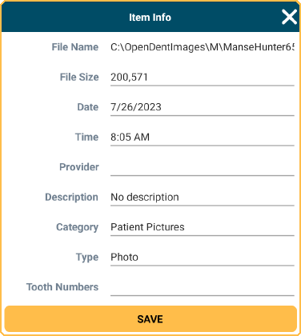

ODTouch: Images
View files saved to the patient's Imaging Module.
From the ODTouch: Home Screen, tap Images.

Only Image Categories in the Imaging Module that contain files display. Tap a file to view it. Pull down on the images list to refresh it.
Files in the following formats are supported: JPEG, PNG, GIF, PDF, BMP, and TIF.
Capture: Use the device to take a new image.
Edit: Select an image, then tap to edit image details.
